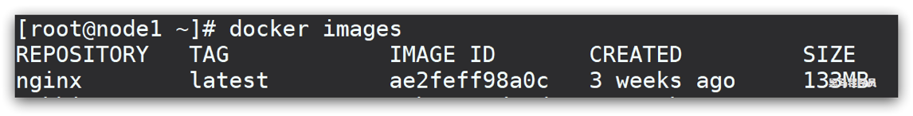
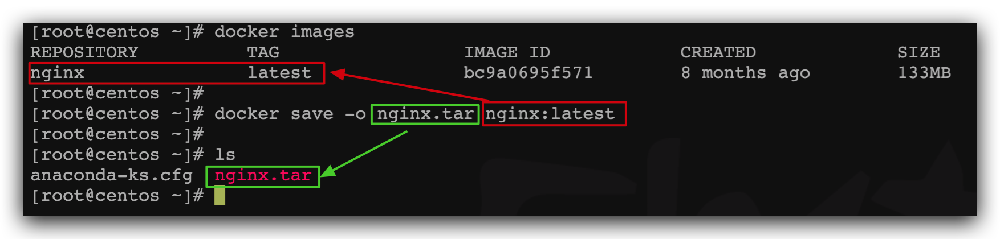
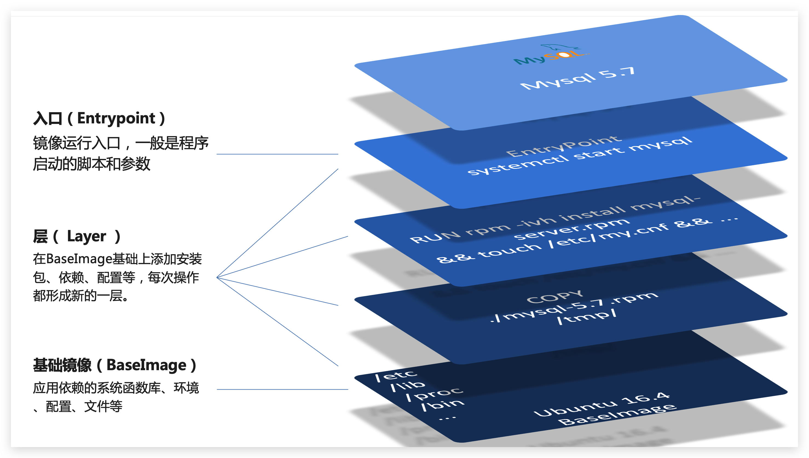
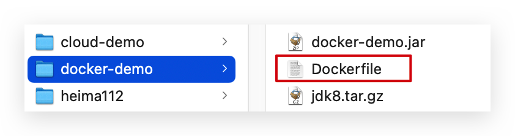
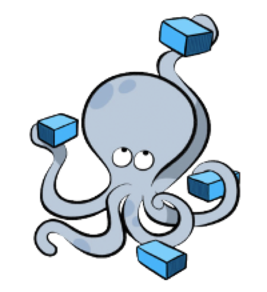
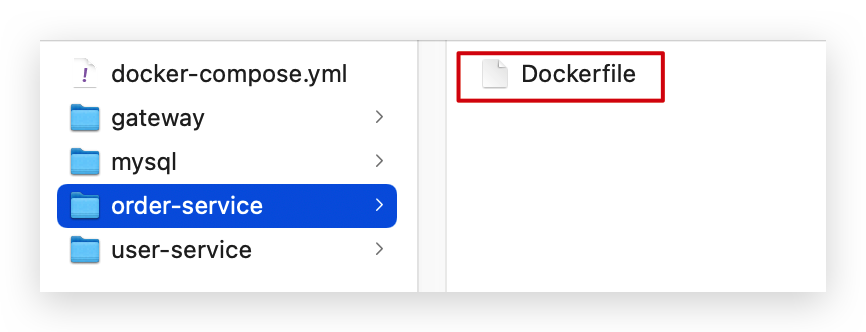

Docker实用篇
0.安装Docker
Docker 分为 CE 和 EE 两大版本。CE 即社区版（免费，支持周期 7 个月），EE 即企业版，强调安全，付费使用，支持周期 24 个月。
Docker CE 分为 stable test 和 nightly 三个更新频道。
官方网站上有各种环境下的 安装指南，这里主要介绍 Docker CE 在 CentOS上的安装。
1.CentOS安装Docker
Docker CE 支持 64 位版本 CentOS 7，并且要求内核版本不低于 3.10， CentOS 7 满足最低内核的要求，所以我们在CentOS 7安装Docker。
1.1.卸载（可选）
如果之前安装过旧版本的Docker，可以使用下面命令卸载：
1yum remove docker \2docker-client \3docker-client-latest \4docker-common \5docker-latest \6docker-latest-logrotate \7docker-logrotate \8docker-selinux \9docker-engine-selinux \10docker-engine \11docker-ce
1.2.安装docker
首先需要大家虚拟机联网，安装yum工具
xxxxxxxxxx31yum install -y yum-utils \2 device-mapper-persistent-data \3 lvm2 --skip-broken
然后更新本地镜像源：
x1# 设置docker镜像源2yum-config-manager \3 --add-repo \4 https://mirrors.aliyun.com/docker-ce/linux/centos/docker-ce.repo5 6sed -i 's/download.docker.com/mirrors.aliyun.com\/docker-ce/g' /etc/yum.repos.d/docker-ce.repo7
8yum makecache fast
然后输入命令：
xxxxxxxxxx11yum install -y docker-cedocker-ce为社区免费版本。稍等片刻，docker即可安装成功。
1.3.启动docker
Docker应用需要用到各种端口，逐一去修改防火墙设置。非常麻烦，因此建议大家直接关闭防火墙！
启动docker前，一定要关闭防火墙后！！
启动docker前，一定要关闭防火墙后！！
启动docker前，一定要关闭防火墙后！！
xxxxxxxxxx41# 关闭2systemctl stop firewalld3# 禁止开机启动防火墙4systemctl disable firewalld
通过命令启动docker：
xxxxxxxxxx51systemctl start docker # 启动docker服务2
3systemctl stop docker # 停止docker服务4
5systemctl restart docker # 重启docker服务
然后输入命令，可以查看docker版本：
xxxxxxxxxx11docker -v
如图：

1.4.配置镜像加速
docker官方镜像仓库网速较差，我们需要设置国内镜像服务：
参考阿里云的镜像加速文档：https://cr.console.aliyun.com/cn-hangzhou/instances/mirrors
2.CentOS7安装DockerCompose
2.1.下载
Linux下需要通过命令下载：
xxxxxxxxxx21# 安装2curl -L https://github.com/docker/compose/releases/download/1.23.1/docker-compose-`uname -s`-`uname -m` > /usr/local/bin/docker-compose如果下载速度较慢，或者下载失败，可以使用课前资料提供的docker-compose文件：

上传到/usr/local/bin/目录也可以。
2.2.修改文件权限
修改文件权限：
xxxxxxxxxx21# 修改权限2chmod +x /usr/local/bin/docker-compose
2.3.Base自动补全命令：
xxxxxxxxxx21# 补全命令2curl -L https://raw.githubusercontent.com/docker/compose/1.29.1/contrib/completion/bash/docker-compose > /etc/bash_completion.d/docker-compose如果这里出现错误，需要修改自己的hosts文件：
xxxxxxxxxx11echo "199.232.68.133 raw.githubusercontent.com" >> /etc/hosts
3.Docker镜像仓库
搭建镜像仓库可以基于Docker官方提供的DockerRegistry来实现。
官网地址：https://hub.docker.com/_/registry
3.1.简化版镜像仓库
Docker官方的Docker Registry是一个基础版本的Docker镜像仓库，具备仓库管理的完整功能，但是没有图形化界面。
搭建方式比较简单，命令如下：
xxxxxxxxxx61docker run -d \2 --restart=always \3 --name registry \4 -p 5000:5000 \5 -v registry-data:/var/lib/registry \6 registry
命令中挂载了一个数据卷registry-data到容器内的/var/lib/registry 目录，这是私有镜像库存放数据的目录。
访问http://YourIp:5000/v2/_catalog 可以查看当前私有镜像服务中包含的镜像
3.2.带有图形化界面版本
使用DockerCompose部署带有图象界面的DockerRegistry，命令如下：
xxxxxxxxxx151version'3.0'2services3 registry4 imageregistry5 volumes6./registry-data:/var/lib/registry7 ui8 imagejoxit/docker-registry-uistatic9 ports108080:8011 environment12REGISTRY_TITLE=传智教育私有仓库13REGISTRY_URL=http://registry:500014 depends_on15registry
3.3.配置Docker信任地址
我们的私服采用的是http协议，默认不被Docker信任，所以需要做一个配置：
xxxxxxxxxx81# 打开要修改的文件2vi /etc/docker/daemon.json3# 添加内容：4"insecure-registries":["http://192.168.150.101:8080"]5# 重加载6systemctl daemon-reload7# 重启docker8systemctl restart docker
1.初识Docker
1.1.什么是Docker
微服务虽然具备各种各样的优势，但服务的拆分通用给部署带来了很大的麻烦。
- 分布式系统中，依赖的组件非常多，不同组件之间部署时往往会产生一些冲突。
- 在数百上千台服务中重复部署，环境不一定一致，会遇到各种问题
1.1.1.应用部署的环境问题
大型项目组件较多，运行环境也较为复杂，部署时会碰到一些问题：
- 依赖关系复杂，容易出现兼容性问题
- 开发、测试、生产环境有差异

例如一个项目中，部署时需要依赖于node.js、Redis、RabbitMQ、MySQL等，这些服务部署时所需要的函数库、依赖项各不相同，甚至会有冲突。给部署带来了极大的困难。
1.1.2.Docker解决依赖兼容问题
而Docker确巧妙的解决了这些问题，Docker是如何实现的呢？
Docker为了解决依赖的兼容问题的，采用了两个手段：
- 将应用的Libs（函数库）、Deps（依赖）、配置与应用一起打包
- 将每个应用放到一个隔离容器去运行，避免互相干扰

这样打包好的应用包中，既包含应用本身，也保护应用所需要的Libs、Deps，无需再操作系统上安装这些，自然就不存在不同应用之间的兼容问题了。
虽然解决了不同应用的兼容问题，但是开发、测试等环境会存在差异，操作系统版本也会有差异，怎么解决这些问题呢？
1.1.3.Docker解决操作系统环境差异
要解决不同操作系统环境差异问题，必须先了解操作系统结构。以一个Ubuntu操作系统为例，结构如下：

结构包括：
- 计算机硬件：例如CPU、内存、磁盘等
- 系统内核：所有Linux发行版的内核都是Linux，例如CentOS、Ubuntu、Fedora等。内核可以与计算机硬件交互，对外提供内核指令，用于操作计算机硬件。
- 系统应用：操作系统本身提供的应用、函数库。这些函数库是对内核指令的封装，使用更加方便。
应用于计算机交互的流程如下：
1）应用调用操作系统应用（函数库），实现各种功能
2）系统函数库是对内核指令集的封装，会调用内核指令
3）内核指令操作计算机硬件
Ubuntu和CentOSpringBoot都是基于Linux内核，无非是系统应用不同，提供的函数库有差异：

此时，如果将一个Ubuntu版本的MySQL应用安装到CentOS系统，MySQL在调用Ubuntu函数库时，会发现找不到或者不匹配，就会报错了：

Docker如何解决不同系统环境的问题？
- Docker将用户程序与所需要调用的系统(比如Ubuntu)函数库一起打包
- Docker运行到不同操作系统时，直接基于打包的函数库，借助于操作系统的Linux内核来运行
如图：

1.1.4.小结
Docker如何解决大型项目依赖关系复杂，不同组件依赖的兼容性问题？
- Docker允许开发中将应用、依赖、函数库、配置一起打包，形成可移植镜像
- Docker应用运行在容器中，使用沙箱机制，相互隔离
Docker如何解决开发、测试、生产环境有差异的问题？
- Docker镜像中包含完整运行环境，包括系统函数库，仅依赖系统的Linux内核，因此可以在任意Linux操作系统上运行
Docker是一个快速交付应用、运行应用的技术，具备下列优势：
- 可以将程序及其依赖、运行环境一起打包为一个镜像，可以迁移到任意Linux操作系统
- 运行时利用沙箱机制形成隔离容器，各个应用互不干扰
- 启动、移除都可以通过一行命令完成，方便快捷
1.2.Docker和虚拟机的区别
Docker可以让一个应用在任何操作系统中非常方便的运行。而以前我们接触的虚拟机，也能在一个操作系统中，运行另外一个操作系统，保护系统中的任何应用。
两者有什么差异呢？
虚拟机（virtual machine）是在操作系统中模拟硬件设备，然后运行另一个操作系统，比如在 Windows 系统里面运行 Ubuntu 系统，这样就可以运行任意的Ubuntu应用了。
Docker仅仅是封装函数库，并没有模拟完整的操作系统，如图：

对比来看：

小结：
Docker和虚拟机的差异：
- docker是一个系统进程；虚拟机是在操作系统中的操作系统
- docker体积小、启动速度快、性能好；虚拟机体积大、启动速度慢、性能一般
1.3.Docker架构
1.3.1.镜像和容器
Docker中有几个重要的概念：
镜像（Image）：Docker将应用程序及其所需的依赖、函数库、环境、配置等文件打包在一起，称为镜像。
容器（Container）：镜像中的应用程序运行后形成的进程就是容器，只是Docker会给容器进程做隔离，对外不可见。
一切应用最终都是代码组成，都是硬盘中的一个个的字节形成的文件。只有运行时，才会加载到内存，形成进程。
而镜像，就是把一个应用在硬盘上的文件、及其运行环境、部分系统函数库文件一起打包形成的文件包。这个文件包是只读的。
容器呢，就是将这些文件中编写的程序、函数加载到内存中允许，形成进程，只不过要隔离起来。因此一个镜像可以启动多次，形成多个容器进程。

例如你下载了一个QQ，如果我们将QQ在磁盘上的运行文件及其运行的操作系统依赖打包，形成QQ镜像。然后你可以启动多次，双开、甚至三开QQ，跟多个妹子聊天。
1.3.2.DockerHub
开源应用程序非常多，打包这些应用往往是重复的劳动。为了避免这些重复劳动，人们就会将自己打包的应用镜像，例如Redis、MySQL镜像放到网络上，共享使用，就像GitHub的代码共享一样。
- DockerHub：DockerHub是一个官方的Docker镜像的托管平台。这样的平台称为Docker Registry。
- 国内也有类似于DockerHub 的公开服务，比如 网易云镜像服务、阿里云镜像库等。
我们一方面可以将自己的镜像共享到DockerHub，另一方面也可以从DockerHub拉取镜像：

1.3.3.Docker架构
我们要使用Docker来操作镜像、容器，就必须要安装Docker。
Docker是一个CS架构的程序，由两部分组成：
- 服务端(server)：Docker守护进程，负责处理Docker指令，管理镜像、容器等
- 客户端(client)：通过命令或RestAPI向Docker服务端发送指令。可以在本地或远程向服务端发送指令。
如图：

1.3.4.小结
镜像：
- 将应用程序及其依赖、环境、配置打包在一起
容器：
- 镜像运行起来就是容器，一个镜像可以运行多个容器
Docker结构：
- 服务端：接收命令或远程请求，操作镜像或容器
- 客户端：发送命令或者请求到Docker服务端
DockerHub：
- 一个镜像托管的服务器，类似的还有阿里云镜像服务，统称为DockerRegistry
1.4.安装Docker
企业部署一般都是采用Linux操作系统，而其中又数CentOS发行版占比最多，因此我们在CentOS下安装Docker。参考课前资料中的文档：

2.Docker的基本操作
2.1.镜像操作
2.1.1.镜像名称
首先来看下镜像的名称组成：
- 镜名称一般分两部分组成：[repository]:[tag]。
- 在没有指定tag时，默认是latest，代表最新版本的镜像
如图：

这里的mysql就是repository，5.7就是tag，合一起就是镜像名称，代表5.7版本的MySQL镜像。
2.1.2.镜像命令
常见的镜像操作命令如图：

2.1.3.案例1-拉取、查看镜像
需求：从DockerHub中拉取一个nginx镜像并查看
1）首先去镜像仓库搜索nginx镜像，比如DockerHub:

2）根据查看到的镜像名称，拉取自己需要的镜像，通过命令：docker pull nginx

3）通过命令：docker images 查看拉取到的镜像

2.1.4.案例2-保存、导入镜像
需求：利用docker save将nginx镜像导出磁盘，然后再通过load加载回来
1）利用docker xx --help命令查看docker save和docker load的语法
例如，查看save命令用法，可以输入命令：
xxxxxxxxxx11docker save --help结果：

命令格式：
xxxxxxxxxx11docker save -o [保存的目标文件名称] [镜像名称]
2）使用docker save导出镜像到磁盘
运行命令：
xxxxxxxxxx11docker save -o nginx.tar nginx:latest结果如图：

3）使用docker load加载镜像
先删除本地的nginx镜像：
xxxxxxxxxx11docker rmi nginx:latest
然后运行命令，加载本地文件：
xxxxxxxxxx11docker load -i nginx.tar结果：

2.1.5.练习
需求：去DockerHub搜索并拉取一个Redis镜像
目标：
1）去DockerHub搜索Redis镜像
2）查看Redis镜像的名称和版本
3）利用docker pull命令拉取镜像
4）利用docker save命令将 redis:latest打包为一个redis.tar包
5）利用docker rmi 删除本地的redis:latest
6）利用docker load 重新加载 redis.tar文件
2.2.容器操作
2.2.1.容器相关命令
容器操作的命令如图：

容器保护三个状态：
- 运行：进程正常运行
- 暂停：进程暂停，CPU不再运行，并不释放内存
- 停止：进程终止，回收进程占用的内存、CPU等资源
其中：
- docker run：创建并运行一个容器，处于运行状态
- docker pause：让一个运行的容器暂停
- docker unpause：让一个容器从暂停状态恢复运行
- docker stop：停止一个运行的容器
- docker start：让一个停止的容器再次运行
- docker rm：删除一个容器
2.2.2.案例-创建并运行一个容器
创建并运行nginx容器的命令：
xxxxxxxxxx31docker run --name containerName -p 80:80 -d nginx2docker run --name mysql -d -p 3306:3306 -e MYSQL_ROOT_PASSWORD=132125 mysql:8.0.263docker run --name LGQS -p 8080:8080 --link mysql:mymysql -d lgqs命令解读：
- docker run ：创建并运行一个容器
- --name : 给容器起一个名字，比如叫做mn
- -p ：将宿主机端口与容器端口映射，冒号左侧是宿主机端口，右侧是容器端口
- -d：后台运行容器
- nginx：镜像名称，例如nginx
这里的-p参数，是将容器端口映射到宿主机端口。
默认情况下，容器是隔离环境，我们直接访问宿主机的80端口，肯定访问不到容器中的nginx。
现在，将容器的80与宿主机的80关联起来，当我们访问宿主机的80端口时，就会被映射到容器的80，这样就能访问到nginx了：

2.2.3.案例-进入容器，修改文件
需求：进入Nginx容器，修改HTML文件内容，添加“传智教育欢迎您”
提示：进入容器要用到docker exec命令。
步骤：
1）进入容器。进入我们刚刚创建的nginx容器的命令为：
xxxxxxxxxx11docker exec -it mn bash命令解读：
- docker exec ：进入容器内部，执行一个命令
- -it : 给当前进入的容器创建一个标准输入、输出终端，允许我们与容器交互
- mn ：要进入的容器的名称
- bash：进入容器后执行的命令，bash是一个linux终端交互命令
2）进入nginx的HTML所在目录 /usr/share/nginx/html
容器内部会模拟一个独立的Linux文件系统，看起来如同一个linux服务器一样：

nginx的环境、配置、运行文件全部都在这个文件系统中，包括我们要修改的html文件。
查看DockerHub网站中的nginx页面，可以知道nginx的html目录位置在/usr/share/nginx/html
我们执行命令，进入该目录：
xxxxxxxxxx11cd /usr/share/nginx/html查看目录下文件：

3）修改index.html的内容
容器内没有vi命令，无法直接修改，我们用下面的命令来修改：
xxxxxxxxxx11sed -i -e 's#Welcome to nginx#传智教育欢迎您#g' -e 's#<head>#<head><meta charset="utf-8">#g' index.htmlsed -i -e 's#Welcome to nginx#你好，CuriT#g' -e 's#
##g' index.html在浏览器访问自己的虚拟机地址，例如我的是：http://192.168.150.101，即可看到结果：

2.2.4.小结
docker run命令的常见参数有哪些？
- --name：指定容器名称
- -p：指定端口映射
- -d：让容器后台运行
查看容器日志的命令：
- docker logs
- 添加 -f 参数可以持续查看日志
查看容器状态：
- docker ps
- docker ps -a 查看所有容器，包括已经停止的
2.3.数据卷（容器数据管理）
在之前的nginx案例中，修改nginx的html页面时，需要进入nginx内部。并且因为没有编辑器，修改文件也很麻烦。
这就是因为容器与数据（容器内文件）耦合带来的后果。

要解决这个问题，必须将数据与容器解耦，这就要用到数据卷了。
2.3.1.什么是数据卷
数据卷（volume）是一个虚拟目录，指向宿主机文件系统中的某个目录。

一旦完成数据卷挂载，对容器的一切操作都会作用在数据卷对应的宿主机目录了。
这样，我们操作宿主机的/var/lib/docker/volumes/html目录，就等于操作容器内的/usr/share/nginx/html目录了
2.3.2.数据集操作命令
数据卷操作的基本语法如下：
xxxxxxxxxx11docker volume [COMMAND]docker volume命令是数据卷操作，根据命令后跟随的command来确定下一步的操作：
- create 创建一个volume
- inspect 显示一个或多个volume的信息
- ls 列出所有的volume
- prune 删除未使用的volume
- rm 删除一个或多个指定的volume
2.3.3.创建和查看数据卷
需求：创建一个数据卷，并查看数据卷在宿主机的目录位置
① 创建数据卷
xxxxxxxxxx11docker volume create html
② 查看所有数据
xxxxxxxxxx11docker volume ls结果：

③ 查看数据卷详细信息卷
xxxxxxxxxx11docker volume inspect html结果：

可以看到，我们创建的html这个数据卷关联的宿主机目录为/var/lib/docker/volumes/html/_data目录。
小结：
数据卷的作用：
- 将容器与数据分离，解耦合，方便操作容器内数据，保证数据安全
数据卷操作：
- docker volume create：创建数据卷
- docker volume ls：查看所有数据卷
- docker volume inspect：查看数据卷详细信息，包括关联的宿主机目录位置
- docker volume rm：删除指定数据卷
- docker volume prune：删除所有未使用的数据卷
2.3.4.挂载数据卷
我们在创建容器时，可以通过 -v 参数来挂载一个数据卷到某个容器内目录，命令格式如下：
xxxxxxxxxx51docker run \2 --name mn \3 -v html:/root/html \4 -p 8080:805 nginx \这里的-v就是挂载数据卷的命令：
-v html:/root/htm：把html数据卷挂载到容器内的/root/html这个目录中
2.3.5.案例-给nginx挂载数据卷
需求：创建一个nginx容器，修改容器内的html目录内的index.html内容
分析：上个案例中，我们进入nginx容器内部，已经知道nginx的html目录所在位置/usr/share/nginx/html ，我们需要把这个目录挂载到html这个数据卷上，方便操作其中的内容。
提示：运行容器时使用 -v 参数挂载数据卷
步骤：
① 创建容器并挂载数据卷到容器内的HTML目录
xxxxxxxxxx11docker run --name mn -v html:/usr/share/nginx/html -p 80:80 -d nginx
② 进入html数据卷所在位置，并修改HTML内容
xxxxxxxxxx61# 查看html数据卷的位置2docker volume inspect html3# 进入该目录4cd /var/lib/docker/volumes/html/_data5# 修改文件6vi index.html
2.3.6.案例-给MySQL挂载本地目录
容器不仅仅可以挂载数据卷，也可以直接挂载到宿主机目录上。关联关系如下：
- 带数据卷模式：宿主机目录 --> 数据卷 ---> 容器内目录
- 直接挂载模式：宿主机目录 ---> 容器内目录
如图：

语法：
目录挂载与数据卷挂载的语法是类似的：
- -v [宿主机目录]:[容器内目录]
- -v [宿主机文件]:[容器内文件]
需求：创建并运行一个MySQL容器，将宿主机目录直接挂载到容器
实现思路如下：
1）在将课前资料中的mysql.tar文件上传到虚拟机，通过load命令加载为镜像
2）创建目录/tmp/mysql/data
3）创建目录/tmp/mysql/conf，将课前资料提供的hmy.cnf文件上传到/tmp/mysql/conf
4）去DockerHub查阅资料，创建并运行MySQL容器，要求：
① 挂载/tmp/mysql/data到mysql容器内数据存储目录
② 挂载/tmp/mysql/conf/hmy.cnf到mysql容器的配置文件
③ 设置MySQL密码
2.3.7.小结
docker run的命令中通过 -v 参数挂载文件或目录到容器中：
- -v volume名称:容器内目录
- -v 宿主机文件:容器内文
- -v 宿主机目录:容器内目录
数据卷挂载与目录直接挂载的
- 数据卷挂载耦合度低，由docker来管理目录，但是目录较深，不好找
- 目录挂载耦合度高，需要我们自己管理目录，不过目录容易寻找查看
3.Dockerfile自定义镜像
常见的镜像在DockerHub就能找到，但是我们自己写的项目就必须自己构建镜像了。
而要自定义镜像，就必须先了解镜像的结构才行。
3.1.镜像结构
镜像是将应用程序及其需要的系统函数库、环境、配置、依赖打包而成。
我们以MySQL为例，来看看镜像的组成结构：

简单来说，镜像就是在系统函数库、运行环境基础上，添加应用程序文件、配置文件、依赖文件等组合，然后编写好启动脚本打包在一起形成的文件。
我们要构建镜像，其实就是实现上述打包的过程。
3.2.Dockerfile语法
构建自定义的镜像时，并不需要一个个文件去拷贝，打包。
我们只需要告诉Docker，我们的镜像的组成，需要哪些BaseImage、需要拷贝什么文件、需要安装什么依赖、启动脚本是什么，将来Docker会帮助我们构建镜像。
而描述上述信息的文件就是Dockerfile文件。
Dockerfile就是一个文本文件，其中包含一个个的指令(Instruction)，用指令来说明要执行什么操作来构建镜像。每一个指令都会形成一层Layer。

更新详细语法说明，请参考官网文档： https://docs.docker.com/engine/reference/builder
3.3.构建Java项目
3.3.1.基于Ubuntu构建Java项目
需求：基于Ubuntu镜像构建一个新镜像，运行一个java项目
步骤1：新建一个空文件夹docker-demo

步骤2：拷贝课前资料中的docker-demo.jar文件到docker-demo这个目录

步骤3：拷贝课前资料中的jdk8.tar.gz文件到docker-demo这个目录

步骤4：拷贝课前资料提供的Dockerfile到docker-demo这个目录

其中的内容如下：
xxxxxxxxxx221# 指定基础镜像2FROM ubuntu:16.043# 配置环境变量，JDK的安装目录4ENV JAVA_DIR=/usr/local56# 拷贝jdk和java项目的包7COPY ./jdk8.tar.gz $JAVA_DIR/8COPY ./docker-demo.jar /tmp/app.jar910# 安装JDK11RUN cd $JAVA_DIR \12&& tar -xf ./jdk8.tar.gz \13&& mv ./jdk1.8.0_144 ./java81415# 配置环境变量16ENV JAVA_HOME=$JAVA_DIR/java817ENV PATH=$PATH:$JAVA_HOME/bin1819# 暴露端口20EXPOSE 809021# 入口，java项目的启动命令22ENTRYPOINT java -jar /tmp/app.jar步骤5：进入docker-demo
将准备好的docker-demo上传到虚拟机任意目录，然后进入docker-demo目录下
步骤6：运行命令：
xxxxxxxxxx11docker build -t javaweb:1.0 .
最后访问 http://192.168.150.101:8090/hello/count，其中的ip改成你的虚拟机ip
3.3.2.基于java8构建Java项目
虽然我们可以基于Ubuntu基础镜像，添加任意自己需要的安装包，构建镜像，但是却比较麻烦。所以大多数情况下，我们都可以在一些安装了部分软件的基础镜像上做改造。
例如，构建java项目的镜像，可以在已经准备了JDK的基础镜像基础上构建。
需求：基于java:8-alpine镜像，将一个Java项目构建为镜像
实现思路如下：
① 新建一个空的目录，然后在目录中新建一个文件，命名为Dockerfile
② 拷贝课前资料提供的docker-demo.jar到这个目录中
③ 编写Dockerfile文件：
a ）基于java:8-alpine作为基础镜像
b ）将app.jar拷贝到镜像中
c ）暴露端口
d ）编写入口ENTRYPOINT
内容如下：
xxxxxxxxxx41FROM java:8-alpine2COPY ./app.jar /tmp/app.jar3EXPOSE 80904ENTRYPOINT java -jar /tmp/app.jar
④ 使用docker build命令构建镜像
⑤ 使用docker run创建容器并运行
3.4.小结
小结：
- Dockerfile的本质是一个文件，通过指令描述镜像的构建过程
- Dockerfile的第一行必须是FROM，从一个基础镜像来构建
- 基础镜像可以是基本操作系统，如Ubuntu。也可以是其他人制作好的镜像，例如：java:8-alpine
4.Docker-Compose
Docker Compose可以基于Compose文件帮我们快速的部署分布式应用，而无需手动一个个创建和运行容器！

4.1.初识DockerCompose
Compose文件是一个文本文件，通过指令定义集群中的每个容器如何运行。格式如下：
xxxxxxxxxx141version: "3.8"2 services:3 mysql:4 image: mysql:5.7.255 environment:6 MYSQL_ROOT_PASSWORD: 123 7 volumes:8 - "/tmp/mysql/data:/var/lib/mysql"9 - "/tmp/mysql/conf/hmy.cnf:/etc/mysql/conf.d/hmy.cnf"10 web:11 build: .12 ports:13 - "8090:8090"14
上面的Compose文件就描述一个项目，其中包含两个容器：
- mysql：一个基于
mysql:5.7.25镜像构建的容器，并且挂载了两个目录 - web：一个基于
docker build临时构建的镜像容器，映射端口时8090
DockerCompose的详细语法参考官网：https://docs.docker.com/compose/compose-file/
其实DockerCompose文件可以看做是将多个docker run命令写到一个文件，只是语法稍有差异。
4.2.安装DockerCompose
参考课前资料
4.3.部署微服务集群
需求：将之前学习的cloud-demo微服务集群利用DockerCompose部署
实现思路：
① 查看课前资料提供的cloud-demo文件夹，里面已经编写好了docker-compose文件
② 修改自己的cloud-demo项目，将数据库、nacos地址都命名为docker-compose中的服务名
③ 使用maven打包工具，将项目中的每个微服务都打包为app.jar
④ 将打包好的app.jar拷贝到cloud-demo中的每一个对应的子目录中
⑤ 将cloud-demo上传至虚拟机，利用 docker-compose up -d 来部署
4.3.1.compose文件
查看课前资料提供的cloud-demo文件夹，里面已经编写好了docker-compose文件，而且每个微服务都准备了一个独立的目录：

内容如下：
xxxxxxxxxx241version"3.2"2
3services4 nacos5 imagenacos/nacos-server6 environment7 MODEstandalone8 ports9"8848:8848"10 mysql11 imagemysql5.7.2512 environment13 MYSQL_ROOT_PASSWORD12314 volumes15"$PWD/mysql/data:/var/lib/mysql"16"$PWD/mysql/conf:/etc/mysql/conf.d/"17 userservice18 build./user-service19 orderservice20 build./order-service21 gateway22 build./gateway23 ports24"10010:10010"可以看到，其中包含5个service服务：
nacos：作为注册中心和配置中心image: nacos/nacos-server： 基于nacos/nacos-server镜像构建environment：环境变量MODE: standalone：单点模式启动
ports：端口映射，这里暴露了8848端口
mysql：数据库image: mysql:5.7.25：镜像版本是mysql:5.7.25environment：环境变量MYSQL_ROOT_PASSWORD: 123：设置数据库root账户的密码为123
volumes：数据卷挂载，这里挂载了mysql的data、conf目录，其中有我提前准备好的数据
userservice、orderservice、gateway：都是基于Dockerfile临时构建的
查看mysql目录，可以看到其中已经准备好了cloud_order、cloud_user表：

查看微服务目录，可以看到都包含Dockerfile文件：

内容如下：
xxxxxxxxxx31FROM java:8-alpine2COPY ./app.jar /tmp/app.jar3ENTRYPOINT java -jar /tmp/app.jar
4.3.2.修改微服务配置
因为微服务将来要部署为docker容器，而容器之间互联不是通过IP地址，而是通过容器名。这里我们将order-service、user-service、gateway服务的mysql、nacos地址都修改为基于容器名的访问。
如下所示：
xxxxxxxxxx111spring2 datasource3 urljdbcmysql//mysql3306/cloud_order?useSSL=false4 usernameroot5 password1236 driver-class-namecom.mysql.jdbc.Driver7 application8 nameorderservice9 cloud10 nacos11 server-addrnacos8848 # nacos服务地址
4.3.3.打包
接下来需要将我们的每个微服务都打包。因为之前查看到Dockerfile中的jar包名称都是app.jar，因此我们的每个微服务都需要用这个名称。
可以通过修改pom.xml中的打包名称来实现，每个微服务都需要修改：
xxxxxxxxxx101<build>2 <!-- 服务打包的最终名称 -->3 <finalName>app</finalName>4 <plugins>5 <plugin>6 <groupId>org.springframework.boot</groupId>7 <artifactId>spring-boot-maven-plugin</artifactId>8 </plugin>9 </plugins>10</build>打包后：

4.3.4.拷贝jar包到部署目录
编译打包好的app.jar文件，需要放到Dockerfile的同级目录中。注意：每个微服务的app.jar放到与服务名称对应的目录，别搞错了。
user-service：

order-service：

gateway：

4.3.5.部署
最后，我们需要将文件整个cloud-demo文件夹上传到虚拟机中，理由DockerCompose部署。
上传到任意目录：

部署：
进入cloud-demo目录，然后运行下面的命令：
xxxxxxxxxx11docker-compose up -d
5.Docker镜像仓库
5.1.搭建私有镜像仓库
参考课前资料《CentOS7安装Docker.md》
5.2.推送、拉取镜像
推送镜像到私有镜像服务必须先tag，步骤如下：
① 重新tag本地镜像，名称前缀为私有仓库的地址：192.168.150.101:8080/
xxxxxxxxxx11docker tag nginx:latest 192.168.150.101:8080/nginx:1.0
② 推送镜像
xxxxxxxxxx11docker push 192.168.150.101:8080/nginx:1.0
③ 拉取镜像
xxxxxxxxxx11docker pull 192.168.150.101:8080/nginx:1.0